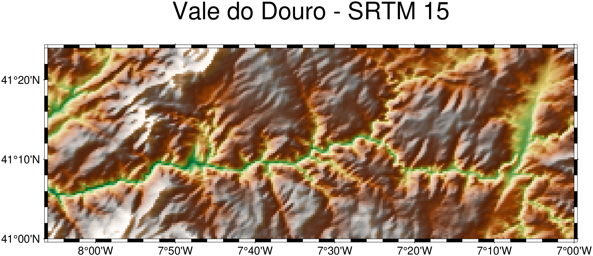

using GMT, HTTP
dgt_lidar([0., 1., 0., 1.]; user="you@example.com", password="s3cr3t", save=true)Downloading Portugal’s High-Resolution LIDAR Data
Portugal’s national mapping agency, the Direção-Geral do Território (DGT), provides free high-resolution LIDAR-derived elevation data covering the entire Portuguese mainland and islands through its Collaborative Data Distribution (CDD) portal. GMT.jl provides two functions for working with this dataset:
dgt_lidar— authenticates against the DGT portal and downloads all tiles intersecting a bounding box.dgt_mosaic— assembles downloaded tiles into a single, clipped GeoTIFF.
Five collections are available:
| Collection | What it measures | Resolution |
|---|---|---|
MDS-2m |
Modelo Digital de Superfície (canopy/rooftops) | 2 m |
MDT-2m |
Modelo Digital do Terreno (bare earth) | 2 m |
MDS-50cm |
Surface model | 50 cm |
MDT-50cm |
Terrain model | 50 cm |
LAZ |
Raw point cloud (LAS/LAZ format) | — |
The default collection is MDS-2m (2 m surface model). All collections are georeferenced in ETRS89/PT-TM06 (EPSG:3763) and distributed as GeoTIFF (except LAZ).
Prerequisites
Create a DGT account
Register for free at https://cdd.dgterritorio.gov.pt/ and confirm your e-mail. Access is granted immediately.
Save credentials once
Pass your e-mail and password with save=true to write a ~/.dgt credentials file that all future calls will read automatically:
The resulting ~/.dgt file looks like this:
# Login data for the DGT LIDAR downloads
login you@example.com
password s3cr3tYou can also create or edit the file directly with any text editor.
Load the extension
dgt_lidar lives in the GMTDGTLidarExt package extension, activated automatically when HTTP is loaded:
using GMT, HTTPFrom this point on all examples assume both packages are loaded and ~/.dgt exists.
Bounding Box — the Direct Form
The most direct call passes a 4-element [min_lon, max_lon, min_lat, max_lat] bounding box in WGS84 decimal degrees. Let’s download the 2 m surface model for the Arrábida Nature Park, a stretch of dramatic limestone cliffs south of Lisbon:
dgt_lidar([-8.995, -8.968, 38.473, 38.486]; output_dir="_arrabida", verbose=2)The _arrabida prefix tells dgt_lidar to save tiles under ~/.gmt/DGT/arrabida/MDS-2m/. Without any underscore prefix the path is interpreted literally. With verbose=2 you see full progress:
--- DGT CDD LIDAR Downloader ---
Bounding box : (-8.995, -8.968, 38.473, 38.486)
Output dir : /home/user/.gmt/DGT/arrabida
Collections : MDS-2m
Bbox divided into 1 sub-queries
Found 12 items
Total unique URLs found: N
Downloading collection: MDS-2m
[1/12] https://cdd.dgterritorio.gov.pt/dgt-be/v1/download/...
...
Done: 12 downloaded, 0 skipped.Downloads are resumable — existing files are silently skipped. Re-running the same command after an interruption only fetches what’s missing.
Dry Run — Scope Before You Download
dry=true authenticates and queries the STAC API but skips all downloads. It is the fastest way to check how many tiles cover your area of interest before committing to a long transfer:
dgt_lidar([-8.995, -8.968, 38.473, 38.486]; dry=true, collection="MDS-50cm", verbose=2)--- DGT CDD LIDAR Downloader [DRY RUN] ---
Bounding box : (-8.995, -8.968, 38.473, 38.486)
Collections : MDS-50cm
Bbox divided into 1 sub-queries
Found 12 items
Total unique URLs found: 70
Collection: MDS-50cm (70 files)
MDS-50cm-124170-06-2024.tiff
MDS-50cm-127168-06-2024.tiff
...Point Coordinates — Single Tile
When you only need the tile covering a specific location, pass longitude and latitude directly as two scalars or as a 2-element vector. dgt_lidar downloads exactly the one tile that contains the point:
# Scalar form — the tile containing the summit of Serra da Estrela
dgt_lidar(-7.607, 40.322; output_dir="_estrela")# 2-element vector form — identical result
dgt_lidar([-7.607, 40.322]; output_dir="_estrela")Expanding to Neighbouring Tiles
Use neighbors to include surrounding tiles. neighbors follows the same convention as mosaic: an integer N adds N rings of tiles on all sides (giving a (2N+1)×(2N+1) grid), or a 2-element vector [Nx, Ny] for asymmetric expansion.
# 3×3 tile grid centred on the Serra da Estrela summit
dgt_lidar(-7.607, 40.322; neighbors=1, output_dir="_estrela")# Wider footprint: 5 tiles east-west, 3 north-south
dgt_lidar(-7.607, 40.322; neighbors=[2,1], output_dir="_estrela")Using a Place Name — Geocoder Dispatch
The geocoder function turns a textual address into a GMTdataset carrying coordinates and a ds_bbox bounding box. Passing that dataset directly to dgt_lidar uses that bounding box as the download region — no manual coordinate lookup needed.
D = geocoder("Palacio da Pena, Sintra, Portugal")Attribute table
┌────────────┬────────┬─────────────────┬───────────────────────┬────────────┬─────────────────┬────────┬──────────────┬───────────┬──────────────┬────────────────┬───────────┬──────────┬─────────────────┬──────────────┬──────────┬────────────┬─────────┬─────────────────────┬───────────────────────┬──────────┬───────────────────────────────────────────────────────────────────────────┬───────────────────────────────────────────────────────────────────────────────────────────────────────────────────────────────────────────────────────────────────────────────────────────────────────┬─────────────────────────────────────────────┬────────────┐
│ lat │ county │ tourism │ suburb │ lon │ road │ town │ address_rank │ place_id │ municipality │ ISO3166-2-lvl6 │ osm_id │ country │ ref │ country_code │ postcode │ place_rank │ class │ importance │ neighbourhood │ osm_type │ city │ display_name │ boundingbox │ type │
├────────────┼────────┼─────────────────┼───────────────────────┼────────────┼─────────────────┼────────┼──────────────┼───────────┼──────────────┼────────────────┼───────────┼──────────┼─────────────────┼──────────────┼──────────┼────────────┼─────────┼─────────────────────┼───────────────────────┼──────────┼───────────────────────────────────────────────────────────────────────────┼───────────────────────────────────────────────────────────────────────────────────────────────────────────────────────────────────────────────────────────────────────────────────────────────────────┼─────────────────────────────────────────────┼────────────┤
│ 38.7875681 │ Lisboa │ Palácio da Pena │ Sintra - São Martinho │ -9.3905649 │ Estrada da Pena │ Sintra │ 30 │ 416485061 │ Sintra │ PT-11 │ 612095421 │ Portugal │ Palácio da Pena │ pt │ 2710-609 │ 30 │ tourism │ 0.43096957211662124 │ Quinta do Castanheiro │ way │ Sintra (Santa Maria e São Miguel, São Martinho e São Pedro de Penaferrim) │ Palácio da Pena, Estrada da Pena, Quinta do Castanheiro, Sintra - São Martinho, Sintra, Sintra (Santa Maria e São Miguel, São Martinho e São Pedro de Penaferrim), Sintra, Lisboa, 2710-609, Portugal │ 38.7870556,38.7880793,-9.3908907,-9.3900990 │ attraction │
└────────────┴────────┴─────────────────┴───────────────────────┴────────────┴─────────────────┴────────┴──────────────┴───────────┴──────────────┴────────────────┴───────────┴──────────┴─────────────────┴──────────────┴──────────┴────────────┴─────────┴─────────────────────┴───────────────────────┴──────────┴───────────────────────────────────────────────────────────────────────────┴───────────────────────────────────────────────────────────────────────────────────────────────────────────────────────────────────────────────────────────────────────────────────────────────────────┴─────────────────────────────────────────────┴────────────┘
BoundingBox: [-9.3905649, -9.3905649, 38.7875681, 38.7875681]
Global BoundingBox: [-9.3908907, -9.390099, 38.7870556, 38.7880793]
PROJ: +proj=longlat +datum=WGS84 +units=m +no_defs
1×2 GMTdataset{Float64, 2}
Row │ Lon Lat
─────┼───────────────────
1 │ -9.39056 38.7876dgt_lidar(D; output_dir="_sintra")When the geocoder returns a point result, ds_bbox collapses to essentially zero size. In that case use zoom to snap to the tile grid at the chosen OpenStreetMap zoom level, giving a naturally-sized area around the point:
# zoom=14 gives roughly a 3×3 km tile-grid cell around the palace
dgt_lidar(D; output_dir="_sintra", zoom=14)From an Existing Grid or Image — GItype Dispatch
If you already have a GMTgrid or GMTimage — a coarser DEM, a satellite scene, any georeferenced raster — pass it directly. dgt_lidar reads the geographic extent from the header and reprojects non-geographic projections to lon/lat automatically.
Load a coarse SRTM grid of the Douro Valley wine region from the GMT remote server:
G_douro = grdcut("@earth_relief_15s", region=(-8.1, -7.0, 41.0, 41.4));
viz(G_douro, C=:geo, shade=true, title="Vale do Douro - SRTM 15")
Now download the 2 m bare-earth DEM covering exactly the same extent — no coordinates to copy:
dgt_lidar(G_douro; output_dir="_douro")But mind you. The above command would download 4253 tiles. Not practical at 2 m resolution! Use dry=true to check the count before downloading.
The same pattern works with a GMTimage (e.g., a Sentinel-2 scene loaded with gmtread).
Two Separate Vectors — lon/lat Dispatch
When the min/max longitude and latitude are already stored in separate variables — common when scripting or when calling from Python via juliacall — pass them as two two-element vectors:
lon = [-8.83, -8.72]
lat = [38.47, 38.53]
dgt_lidar(lon, lat; output_dir="_arrabida", collection="MDS-50cm")Tuples work too: dgt_lidar((-8.83, -8.72), (38.47, 38.53); ...).
File Versions — latest
The DGT occasionally releases corrected versions of tiles. Versioned files carry a _v01, _v02, … suffix; the original unversioned file is implicitly version 0. By default (latest=true) dgt_lidar keeps only the most recent version of each tile, discarding older ones automatically:
MDS-2m-115197-07-2024.tiff ← version 0 (original)
MDS-2m-115197-07-2024_v01.tiff ← version 1 (correction) ✓ keptTo download every version — for archival purposes or to compare revisions — set latest=false:
dgt_lidar([-8.995, -8.968, 38.473, 38.486]; output_dir="_arrabida", latest=false)The version count is reported at verbose=2:
Keeping latest versions: 3 older file(s) excludedDownload and Mosaic in One Step
Set mosaic to an output path to download tiles and immediately assemble them into a single file. The format is determined by the extension (.tiff/.tif for compressed GeoTIFF, .nc for netCDF4). Use "grid" to skip disk I/O entirely and return a GMTgrid in memory.
# Algarve cliffs — download MDS-2m tiles and build a mosaic
dgt_lidar([-8.5, -8.3, 37.0, 37.1];
output_dir = "_algarve",
mosaic = "algarve_surface.tiff")To resample to a different resolution during assembly, add inc (in CRS units — metres for ETRS89):
# Same area, resampled to 5 m with bicubic spline — smaller file, smoother surface
dgt_lidar([-8.5, -8.3, 37.0, 37.1];
output_dir = "_algarve",
mosaic = "algarve_5m.tiff",
inc = 5.0,
method = "cubicspline")Available method values: near, bilinear, cubic, cubicspline, lanczos, average, rms, mode, min, max, med, q1, q3, sum. The default cubicspline gives the smoothest result for elevation data; bilinear is faster; near preserves sharp edges in canopy models.
To get the mosaic back as a GMTgrid with no disk I/O and visualize it immediately, set mosaic="grid" and pass the result to viz:
G = dgt_lidar(-7.607, 40.322; neighbors=1, output_dir="_estrela", mosaic="grid");
viz(G, shade=true, view=(145, 35), title="Serra da Estrela - MDS-2m")
Note, if you noticed the line of small peaks running from the the NW corner, that is noise in the data (not a mosaic artifact).
Assembling an Existing Tile Cache — dgt_mosaic
If tiles are already on disk, dgt_mosaic assembles them at any time — no re-download, no credentials required:
dgt_mosaic([-8.995, -8.968, 38.473, 38.486];
src_dir = "_arrabida",
outfile = "arrabida_mds2m.tiff")The function builds an in-memory GDAL VRT mosaic of all .tiff files in ~/.gmt/DGT/arrabida/MDS-2m/, clips it to the bounding box, and writes the result. Use vrt="arrabida.vrt" to also save the intermediate VRT file for inspection in QGIS.
Root tile pool
When src_dir uses the _ prefix, dgt_mosaic automatically also includes tiles from the root ~/.gmt/DGT/<collection>/ directory (the pool used when src_dir="" is omitted). This means a previous general download is transparently combined with a regional one:
# Previously downloaded some tiles to the default location (no prefix)
dgt_lidar([-9.0, -8.7, 38.4, 38.6]) # → ~/.gmt/DGT/MDS-2m/
# Later, downloaded additional tiles to a named subdirectory
dgt_lidar([-8.995, -8.968, 38.473, 38.486]; output_dir="_arrabida") # → ~/.gmt/DGT/arrabida/MDS-2m/
# Mosaic draws from BOTH locations automatically
dgt_mosaic([-8.995, -8.968, 38.473, 38.486]; src_dir="_arrabida", outfile="combined.tiff")Resampling during assembly is independent of what was downloaded:
# 50 cm tiles already on disk → assemble at 2 m (4× smaller file)
dgt_mosaic([-8.995, -8.968, 38.473, 38.486];
src_dir = "_arrabida",
collection = "MDS-50cm",
outfile = "arrabida_50cm_to2m.tiff",
inc = 2.0)Reprojecting the Mosaic
By default the mosaic is written in the native DGT projection (ETRS89/PT-TM06, EPSG:3763). Use proj to reproject on-the-fly during assembly — no separate gdalwarp step needed.
"geog" is shorthand for geographic coordinates (EPSG:4326 / WGS84 lon/lat):
dgt_mosaic([-8.995, -8.968, 38.473, 38.486];
src_dir = "_arrabida",
outfile = "arrabida_geog.tiff",
proj = "geog")A bare integer string is interpreted as an EPSG code. UTM zone 29N (EPSG:32629) is the standard metric projection for mainland Portugal:
dgt_mosaic([-8.995, -8.968, 38.473, 38.486];
src_dir = "_arrabida",
outfile = "arrabida_utm29n.tiff",
proj = "32629")Any GDAL-recognised CRS string works — "EPSG:32629", "+proj=utm +zone=29 +datum=WGS84", WKT, etc. proj and inc can be combined to reproject and resample in one pass:
# Reproject to geographic and resample to 0.00002° (≈ 2 m at Portugal's latitude)
dgt_mosaic([-8.995, -8.968, 38.473, 38.486];
src_dir = "_arrabida",
outfile = "arrabida_geog_2m.tiff",
proj = "geog",
inc = 0.00002)The same proj keyword is available on dgt_lidar via mosaic:
dgt_lidar([-8.995, -8.968, 38.473, 38.486];
output_dir = "_arrabida",
mosaic = "arrabida_utm.tiff",
proj = "32629")Visualizing the Result
Plot with standard GMT.jl tools:
# Note: Unfortunately, the "Rocha da Anicha" was not surveyed.
viz("arrabida_mds2m.tiff", C=:terra, shade=true, title="Portinho da Arrábida")
Point-cloud data (LAZ collection) can be loaded with GMT’s lasread function:
dgt_lidar([-8.995, -8.968, 38.473, 38.486]; collection="LAZ", output_dir="_arrabida_laz")
pc = lasread(joinpath(homedir(), ".gmt/DGT/arrabida_laz/LAZ/LO-148174-06-2024.laz"))Large Areas — Automatic Subdivision
dgt_lidar automatically splits large bounding boxes into ~200 km² sub-queries to stay within the DGT STAC API request limits. For a query covering all of the Alentejo region (~33 000 km²) the function transparently fans out into dozens of sub-queries, deduplicates the URL list, and downloads:
dgt_lidar([-8.8, -6.8, 37.3, 39.4];
output_dir = "_alentejo",
collection = "MDT-2m",
verbose = 2)Bbox divided into 221 sub-queries
Found 216 items
...
Done: 216 downloaded, 0 skipped.The delay keyword (default 1 s) controls the pause between requests. Increase it if you see rate-limit errors from the server:
dgt_lidar([-8.8, -6.8, 37.3, 39.4]; delay=2.0, output_dir="_alentejo")Session Re-authentication
Long downloads may outlast the DGT portal’s session token. dgt_lidar re-authenticates automatically every 25 minutes and after every 10 files downloaded — no manual intervention needed.
Quick Reference
| What you have | Call |
|---|---|
| Bounding box array | dgt_lidar([lon1,lon2,lat1,lat2]; ...) |
| Two separate vectors | dgt_lidar(lon, lat; ...) |
| Single point (scalars) | dgt_lidar(lon, lat; neighbors=1, zoom=14, ...) |
| Single point (2-elem array) | dgt_lidar([lon, lat]; neighbors=1, zoom=14, ...) |
| Geocoder result | dgt_lidar(D; zoom=14, ...) |
| Existing grid or image | dgt_lidar(G; ...) |
| Download + mosaic to file | dgt_lidar(...; mosaic="out.tiff") |
| Download + mosaic in memory | G = dgt_lidar(...; mosaic="grid") |
| Mosaic tiles on disk | dgt_mosaic(bbox; src_dir="...", outfile="...") |
| Mosaic → geographic (WGS84) | dgt_mosaic(...; proj="geog") |
| Mosaic → UTM zone 29N | dgt_mosaic(...; proj="32629") |
| Mosaic → any CRS | dgt_mosaic(...; proj="EPSG:XXXX") or proj string |
| Reproject + resample | dgt_mosaic(...; proj="geog", inc=0.00002) |
| Check before downloading | dgt_lidar(...; dry=true, verbose=2) |
| Latest versions only | dgt_lidar(...; latest=true) (default) |
| All versions | dgt_lidar(...; latest=false) |
| 50 cm terrain model | dgt_lidar(...; collection="MDT-50cm") |
| Raw point cloud | dgt_lidar(...; collection="LAZ") |